原生多模态大模型¶
多模态输入的三种主要方式 🚗¶
- 专用 Encoder 路线：图像、音频、视频先经过各自的 Encoder，再映射成统一向量送入共享 Transformer。
- 直接分块投影路线：将图像 patch、音频帧等直接投影为 token，由主干 Transformer 自己完成模态建模和融合。
- 统一离散 Token 路线：把文本、图像、音频、视频都离散成 token，再用同一个 Transformer 统一理解和生成。
📄 涉及论文链接： - Emu3: Next-Token Prediction is All You Need (2024) - Emu3.5: Native Multimodal Models are World Learners (2025) - Chameleon: Mixed-Modal Early-Fusion Foundation Models (2024) - Janus: Decoupling Visual Encoding for Unified Multimodal Understanding and Generation (2024) - Janus-Pro: Unified Multimodal Understanding and Generation with Data and Model Scaling (2025) - Emerging Properties in Unified Multimodal Pretraining (BAGEL, 2025) - Show-o: One Single Transformer to Unify Multimodal Understanding and Generation (2024) - Show-o2: Improved Native Unified Multimodal Models (2025) - Lumina-mGPT: Illuminate Flexible Photorealistic Text-to-Image Generation with Multimodal Generative Pretraining (2024)
目录¶
- 核心要点
- 〇、多模态 Tokenizer：原生多模态的模态翻译官
- 一、Emu3 / Emu3.5：纯 Next-Token Prediction 原生多模态
- 二、Chameleon：Meta 的早期融合混合模态模型
- 三、Janus / Janus-Pro：解耦视觉编码的统一理解与生成
- 四、BAGEL：MoT 双专家统一理解、生成与编辑
- 五、Show-o / Show-o2：自回归与扩散的统一
- 六、Lumina-mGPT：基于 Chameleon 的灵活分辨率真实感生成
- 七、技术路线对比与总结
核心要点¶
- 原生多模态 vs 后装式多模态：原生模型从预训练阶段就在混合模态数据上联合训练所有参数，而非先训好纯文本 LLM 再接入视觉编码器；最严格的形式是把所有模态都变成离散 token，由单一 Transformer 做 next-token prediction。
- 三条技术路线：① 统一离散 token + 纯自回归（Emu3、Chameleon、Lumina-mGPT）；② 解耦视觉编码 + 统一 Transformer（Janus、Janus-Pro）；③ 连续视觉隐空间 + 双头（自回归 LM Head + Flow/Diffusion Head，Show-o2、BAGEL）。
- 理解与生成的表征冲突：理解需要高维语义特征，生成需要低维细粒度特征，Janus 通过解耦两个视觉编码器解决这一冲突；BAGEL 和 Show-o2 则通过双路融合或 MoT 专家分别处理两类特征。
- 推理速度是自回归视觉生成的瓶颈：Emu3.5 的 DiDA 把视觉 token 的双向并行去噪引入自回归模型，单图推理提速约 20 倍。
- 训练数据与阶段设计是关键：Emu3.5 用 13T+ token 长视频交错数据做预训练，Janus-Pro 用 7200 万合成美学数据提升生成，BAGEL 用 5T+ token 观察到能力随规模涌现。
〇、多模态 Tokenizer：原生多模态的模态翻译官¶
0.1 视觉Tokenizer¶
0.1.1 为什么视觉 Tokenizer 是核心¶
在原生多模态模型中，文本、图像、视频最终要进入同一个 Transformer。文本可以直接用 BPE 等 tokenizer 变成离散 ID，但图像是连续像素。视觉 tokenizer 的作用就是把连续像素空间映射到离散 token 空间，让图像也能像文本一样被自回归模型处理。
图像/视频像素 → Visual Tokenizer → 离散视觉 Token → 与文本 Token 共享词表 → Transformer
它同时承担两种角色： - 编码器（Encoder）：把输入图像压缩成离散 token，供 LLM 理解。 - 解码器（Decoder）：把 LLM 预测出的 token 还原成图像，完成生成。
因此，tokenizer 的重建质量、语义对齐程度、压缩效率，直接决定了原生多模态模型的上限。
0.1.2 VQ-VAE：视觉 Tokenizer 的基础范式 ❓（其他范式暂时搁置）¶
最常见的视觉 tokenizer 基于 Vector Quantized Variational AutoEncoder（VQ-VAE），包含三个部分：
- Encoder：CNN 或 Transformer，把图像压缩成连续的 latent feature map。
- Vector Quantization（VQ）：把每个 latent 向量替换成 codebook 中最近的向量，得到离散 token ID。
- Decoder：根据离散 token 重建图像。
训练目标通常包括：
- 重建损失（Reconstruction Loss）：通常用 L2 或 L1，衡量像素级重建误差。
- Commitment Loss：约束 encoder 的输出贴近 codebook 向量，避免 codebook 利用率低。
- 感知损失（Perceptual Loss，如 LPIPS）：在特征空间衡量重建图像与原图的感知相似度。
- GAN 损失：提升重建真实感。
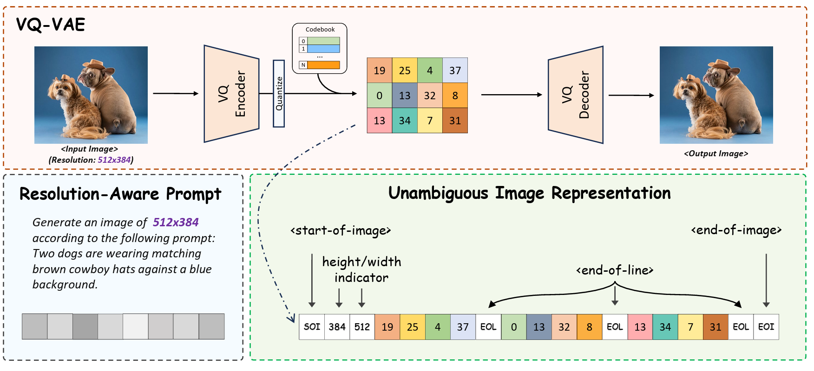
Figure 0-1: VQ-VAE 图像 tokenizer 流程：Encoder → Quantize → 离散视觉 Token → Decoder 重建。0.1.3 评价视觉 Tokenizer 的四个维度¶
| 维度 | 含义 | 影响 |
|---|---|---|
| 重建质量 | decoder 还原图像的清晰度、细节保留、无伪影 | 直接决定生成图像质量 |
| 语义对齐 | 语义相近的图像是否有相近的 token 表示 | 影响 LLM 的理解与推理能力 |
| 压缩效率 | 相同视觉信息用多少 token 表示 | 决定序列长度、训练/推理成本 |
| 模态灵活性 | 是否支持视频、不同分辨率、不同长宽比 | 决定模型能否原生处理多模态 |
这三个维度之间存在冲突。例如： - 压缩率太高 → 细节丢失，重建质量下降。 - 压缩率太低 → token 数爆炸，自回归生成太慢。 - 过于追求重建细节 → token 可能偏向低频纹理，语义信息不足。
0.1.4 理解 vs 生成的表征冲突¶
视觉 tokenizer 面临一个根本矛盾：
- 多模态理解需要高层语义特征（如物体类别、空间关系），倾向于像 CLIP/SigLIP 这样的语义编码器。
- 视觉生成需要低层细粒度特征（如纹理、颜色、像素级一致性），倾向于像 VQ-VAE/VAE 这样的重建型编码器。
这种冲突是 Janus 选择解耦视觉编码的根本原因：理解用 SigLIP，生成用 VQ tokenizer。而 Emu3、Chameleon、Lumina-mGPT 则选择让同一个 tokenizer 同时服务两端，通过扩大 codebook、引入语义蒸馏、改进 decoder 来缓解冲突。
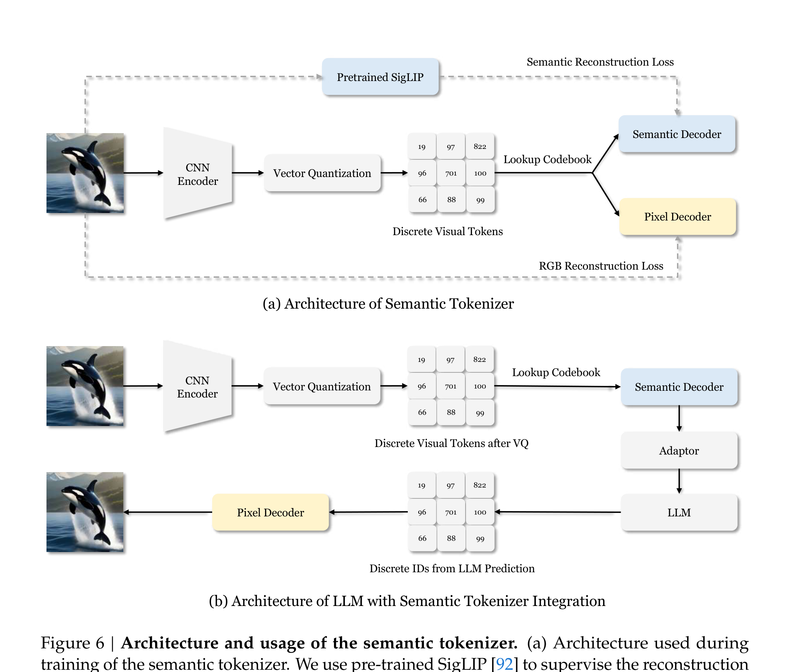
Figure 0-2: Janus 的语义 tokenizer 架构：用预训练 SigLIP 监督语义重建，同时保留像素 decoder。0.1.5 几篇论文的 Tokenizer 设计对比¶
| 模型 | tokenizer 类型 | Codebook | 压缩率 | 关键设计 |
|---|---|---|---|---|
| Chameleon | VQ-VAE based | 8192 | 512×512 → 1024 tokens | 图像与文本共享统一词表 |
| Emu3 | SBER-MoVQGAN 改进 | 32768 | 4×8×8（时×空×空） | 加入 3D 时间残差层，支持视频 |
| Emu3.5 | IBQ tokenizer | 131072 | f=16，D=256 | SigLIP 蒸馏；提供 vanilla / diffusion 双 decoder |
| Janus | 理解：SigLIP（连续）；生成：VQ tokenizer（离散） | 生成侧 16384 | 下采样 16 | 明确解耦，理解与生成分开编码 |
| Lumina-mGPT | VQ-VAE | 8192 | 512×512 → 16×16 tokens | 复用 Chameleon，重点在 Uni-Rep 处理分辨率 |
| Show-o | MAGVIT-v2 lookup-free quantizer | 8192 | 256×256 → 16×16 tokens | lookup-free 提升效率，支持离散扩散 |
| Show-o2 | Wan2.1 3D Causal VAE | 连续 latent | 8× 时空压缩 | 不用离散 token，直接用连续 VAE latent |
| BAGEL | 理解：SigLIP2 ViT；生成：FLUX VAE | 连续 latent | 8× 下采样 | 双编码器：ViT token 理解，VAE latent 生成 |
0.1.6 Tokenizer 优化的关键技术¶
1. 更大 Codebook 与更高维度¶
Codebook 越大，可表示的视觉模式越丰富。Emu3.5 把 codebook 从 Emu3 的 32768 扩到 131072，维度 D=256，显著提升 tokenizer 表达能力。
2. 语义蒸馏¶
Emu3.5 在 tokenizer 训练中引入 SigLIP 特征蒸馏，让视觉 token 不仅保留像素信息，还具备语义信息：
这缓解了纯重建 tokenizer 语义不足的问题。
3. 可变分辨率表示¶
固定分辨率 tokenizer 无法处理不同长宽比。Lumina-mGPT 提出 Uni-Rep，在图像 token 序列中加入：
<start-of-image>（SOI）- 高/宽指示 token
<end-of-line>（EOL）<end-of-image>（EOI）
这样即使总 token 数相同，也能唯一还原原始图像分辨率与长宽比。
4. 双 Decoder 设计¶
Emu3.5 提供两种 decoder： - Vanilla Decoder：重建质量好，同图仅用 Emu3 的 1/4 token。 - Diffusion Decoder：同离散 token 上生成 2× 分辨率，文本/面部细节更强；通过 LoRA 蒸馏把去噪步数从 50 步降到 4 步，提速约 10 倍。
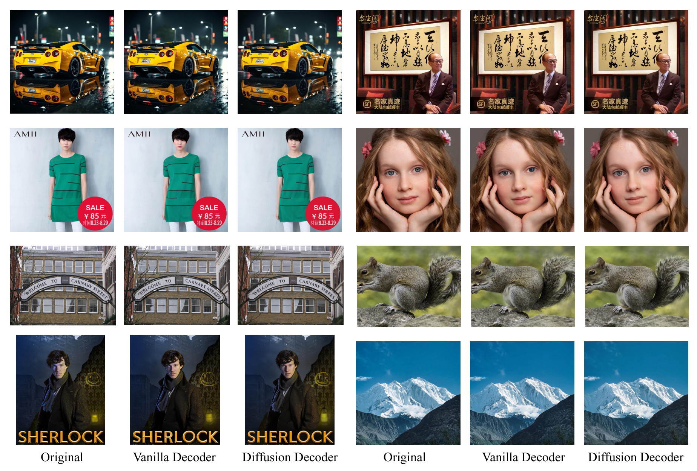
Figure 0-3: Emu3.5 tokenizer 重建效果对比：Original / Vanilla Decoder / Diffusion Decoder。5. 离散扩散与 Mask Token¶
Show-o 使用 MAGVIT-v2 把图像编码为离散 token，并在生成时做 Mask Token Prediction（MTP）：按随机比例把图像 token 替换为 [MASK]，模型逐步预测并替换 mask token。
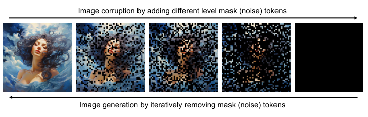
Figure 0-4: Show-o 的离散扩散过程：通过添加/去除 mask token 实现图像加噪与去噪。0.1.7 连续 vs 离散：另一条路线¶
并非所有原生多模态模型都把视觉变成离散 token。Show-o2 和 BAGEL 使用 连续 VAE latent：
- 优点：直接继承扩散/flow matching 的高质量生成，不需要设计复杂的离散 tokenizer。
- 缺点：不能严格称为"统一离散 token"，需要额外的生成头（Flow Head / Diffusion Head）和特殊的损失设计。
这形成了一个连续谱：
最严格统一离散 token ←──────────────────────────→ 连续隐空间 + 双头
Emu3 / Chameleon Lumina-mGPT / Show-o Show-o2 / BAGEL
0.1.8 小结¶
视觉 tokenizer 是原生多模态模型的"模态翻译官"和"像素画笔"，它决定了：
- 模型能否把图像变成 LLM 能理解的 token；
- 模型生成的图像质量上限；
- 序列长度、训练成本、推理速度。
当前主流优化方向是：更大 codebook、语义蒸馏、可变分辨率、双 decoder、以及从离散 token 向连续 VAE latent 的扩展。理解这些 tokenizer 设计，是理解后续每一篇原生多模态论文的基础。
0.2 音频Tokenizer¶
0.3 视频Tokenizer¶
一、Emu3 / Emu3.5：纯 Next-Token Prediction 原生多模态¶
1.1 Emu3¶
📄 论文：Emu3: Next-Token Prediction is All You Need
作者：Xinlong Wang, Xiaosong Zhang, Zhengxiong Luo 等 (BAAI)
发表：arXiv 2024
核心思想¶
Emu3 的出发点是：能否完全抛弃扩散模型和 CLIP+LLM 的组合式架构，只用一个标准的自回归 Transformer，通过 next-token prediction 同时完成文本、图像、视频的生成与感知？
答案是肯定的。Emu3 把图像和视频都离散化为视觉 token，与文本 token 共享同一个序列空间，在混合模态数据上从头训练一个 Decoder-only Transformer。
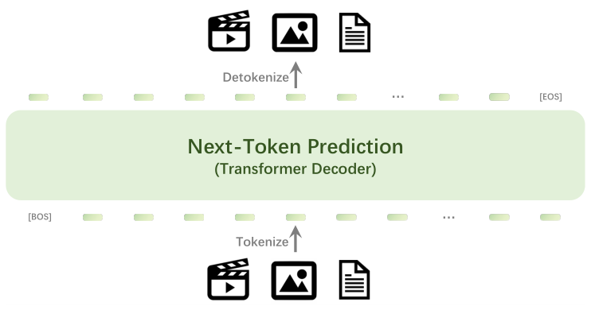
Figure 1: Emu3 模型整体架构：单一 Transformer Decoder 做 next-token prediction，视频、图像、文本统一 token 化。网络架构¶
主干：基于 LLaMA-2 风格的 Decoder-only Transformer。
| 配置 | 数值 |
|---|---|
| 参数量 | 8B |
| 层数 | 32 |
| Hidden Size | 4096 |
| Intermediate Size | 14336 |
| 注意力头数 | 32 |
| KV 头数 | 8 |
| 词表大小 | 184,622 |
| 最大上下文长度 | 131,072 |
| 位置编码 | RoPE（Base 1,000,000） |
| 归一化 | RMSNorm |
| 激活函数 | SwiGLU |
文本 tokenizer：QwenTokenizer，支持多语言。
视觉 tokenizer：基于 SBER-MoVQGAN 改进。🚗
| 配置 | 数值 |
|---|---|
| Codebook Size | 32,768 |
| Latent Size | 4 |
| 时间压缩率 | 4× |
| 空间压缩率 | 8×8 |
| 输出 token 数 | 512×512 图像 → 4096 tokens；4×512×512 视频片段 → 4096 tokens |
视觉 tokenizer 在 encoder/decoder 中加入了两层带 3D 卷积核的时间残差层，训练损失为：
训练方法¶
数据格式：
[BOS] [caption text] [SOV] [meta text] [SOT] [vision tokens] [EOV] [EOS]
[SOV]：视觉输入开始[SOT]：视觉 token 开始[EOV]：视觉输入结束[EOL]：换行[EOF]：换帧meta text：分辨率、帧率、时长等元信息
训练目标：标准交叉熵 next-token prediction，视觉 token 的损失权重为 0.5，防止视觉 token 主导训练。
其中 \(w_i = 0.5\) 当 \(x_i\) 为视觉 token，否则 \(w_i = 1\)。
两阶段预训练：
| 阶段 | 数据 | 上下文长度 | 说明 |
|---|---|---|---|
| Stage 1 | 文本 + 图像 | 5120 | 从头训练 |
| Stage 2 | 文本 + 图像 + 视频 | 131,072 | 加入视频数据 |
优化器 AdamW，学习率 \(5 \times 10^{-5}\)，cosine annealing 到 0，weight decay 0.1，dropout 0.1。
后训练：
- Quality Fine-Tuning (QFT)：只用高质量数据继续训练，监督信号只对视觉 token，图像分辨率从 512 提升到 720。
- DPO：首次将 Direct Preference Optimization 用于自回归视觉生成，每个提示生成 8–10 个样本，人工标注偏好，构建
(prompt, chosen, rejected)三元组。
1.2 Emu3.5¶
📄 论文：Emu3.5: Native Multimodal Models are World Learners
作者：BAAI
发表：arXiv 2025
核心思想¶
Emu3.5 在 Emu3 的基础上大幅 scale up，提出"原生多模态世界模型"：34B 参数、13T+ 多模态 token 预训练，核心数据来自约 6300 万段互联网视频及其 ASR 转录，强调时序连续性与跨模态对齐。最大改进是推理加速 DiDA（Discrete Diffusion Adaptation），让自回归模型在视觉生成时也能双向并行去噪。
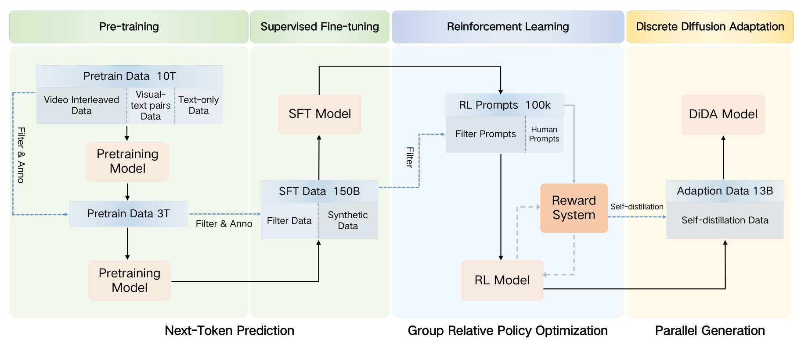
Figure 2: Emu3.5 训练管线：Pre-training → SFT → RL → DiDA 四阶段。网络架构¶
| 配置 | 数值 |
|---|---|
| 总参数量 | 34.1B（Transformer 31.2B + Embedding 2.9B） |
| 层数 | 64 |
| Hidden Size | 5120 |
| Intermediate Size | 25600 |
| 注意力 | GQA（64 Q heads / 8 KV heads） |
| 位置编码 | RoPE |
| 归一化 | RMSNorm + Pre-Norm + QK-Norm |
| 激活函数 | SwiGLU |
| 最大上下文长度 | 32,768 |
| 总词表 | 282,926（文本 151,854 + 视觉 131,072） |
Tokenizer：采用 IBQ 视觉 tokenizer，下采样因子 \(f=16\)，codebook 维度 \(D=256\)，codebook 大小 131,072，tokenizer 模型约 455M 参数。训练时引入 SigLIP 特征蒸馏以提升语义表征。
提供两种图像解码器： - Vanilla Decoder：重建质量好，同图仅用 Emu3 的 1/4 token。 - Diffusion Decoder（可选）：同离散 token 上生成 2× 分辨率，文本/面部细节更强；通过 LoRA 蒸馏把去噪步数从 50 步降到 4 步，提速约 10 倍。
训练方法¶
预训练数据（总计 >13T token）：
- Video Interleaved Data：约 6300 万视频，平均 6.5 分钟，PySceneDetect 切分场景、Whisper-large-v2 转录、spaCy 分段。
- Vision-Text Paired Data：约 5 亿图文对 + 3000 万视频-文本对，用 Qwen2.5-VL-7B 重新标注。
- Any-to-Image Data：约 2735 万样本。
- Text-only Data：约 3 万亿 token。
两阶段预训练：
| 阶段 | Token 数 | 最大序列长度 | 图像分辨率 | 视觉 token 上限 |
|---|---|---|---|---|
| Stage 1 | 10T | 32,768 | 512×512 | 1024 |
| Stage 2 | ~3T | 32,768 | 512×1024 | 1024–4096 |
优化器 AdamW（\(\beta_1=0.9, \beta_2=0.95, \epsilon=10^{-8}\)），Stage 1 学习率 \(5 \times 10^{-4}\)，Stage 2 \(1 \times 10^{-5}\)，cosine schedule，weight decay 0.1，gradient clip 5.0，batch size 448。
后训练：
- SFT：150B token，覆盖 General Tasks、Any-to-Image、Visual Narrative、Visual Guidance、World Exploration、Embodied Manipulation 六大任务。
- RL：使用 GRPO（Group Relative Policy Optimization），全局 batch size 640，学习率 \(10^{-6}\)，rollout 数 8。奖励系统分三层：通用性奖励、任务专属奖励、统一归一化奖励。
- DiDA 适配：在 RL 模型基础上，用 13B 自蒸馏数据做轻量适配，修改 attention mask，使噪声视觉 token 可在同一张图内双向 attending，而文本/干净 token 保持因果模式。
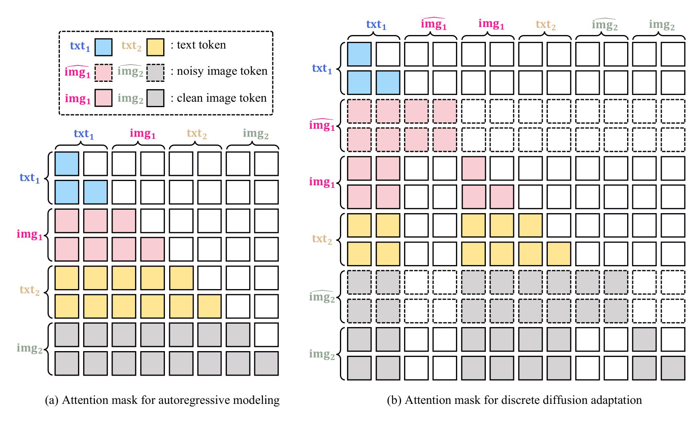
Figure 3: DiDA 的 attention mask 对比：自回归 vs 双向并行。Emu3 vs Emu3.5¶
| 维度 | Emu3 | Emu3.5 |
|---|---|---|
| 模型规模 | 8B | 34B |
| 预训练数据 | 较小规模 | >13T 多模态 token，核心为长视频交错数据 |
| Tokenizer 效率 | 同图需更多 token | Vanilla Decoder 仅用 Emu3 的 1/4 token |
| Codebook | 较小 | 131,072，D=256，f=16 |
| 图像分辨率 | 720×720 | 1024×1024，甚至 2K |
| 后训练 | QFT + DPO | 150B SFT + GRPO + DiDA |
| 推理速度 | 标准自回归 | DiDA 约 20× 提速 |
| 任务能力 | 图像/文本/视频生成 | 新增 Visual Narrative、World Exploration、Embodied Manipulation 等 |
二、Chameleon：Meta 的早期融合混合模态模型¶
📄 论文：Chameleon: Mixed-Modal Early-Fusion Foundation Models
作者：Chameleon Team, Meta (FAIR)
发表：arXiv 2024
核心思想¶
Chameleon 是 Meta 提出的 early-fusion mixed-modal 模型。它把图像和文本都表示为离散 token，在输入层就融合成交错的统一序列，用一个自回归 Transformer 同时处理理解与生成。与 LLaVA 的"连续视觉特征 → 投影 → LLM"不同，Chameleon 没有单独的视觉编码器，图像经 tokenizer 后直接变成 token 与文本共享 embedding。
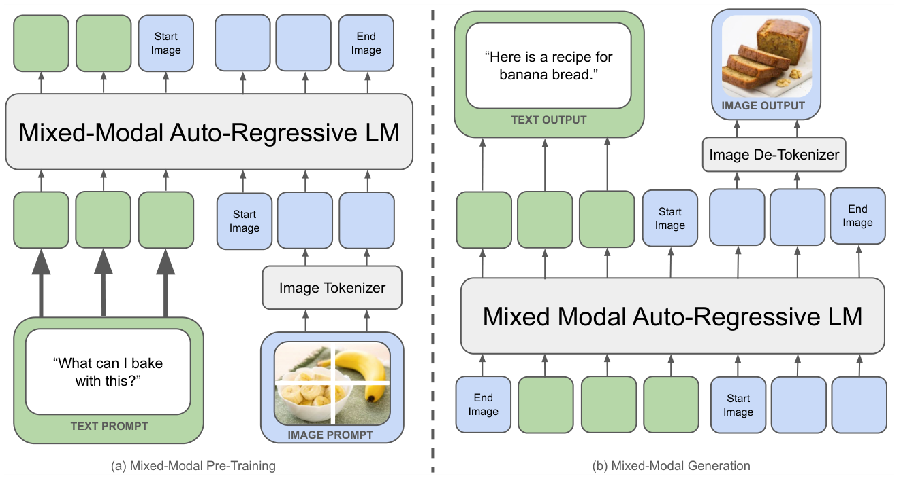
Figure 4: Chameleon 模型整体架构：Mixed-Modal Auto-Regressive LM。网络架构¶
基础结构：基于 LLaMA-2，使用 RMSNorm、SwiGLU、RoPE；34B 版本使用 GQA。
图像 tokenizer：基于 Gafni et al. (2022) 训练，将 512×512 图像量化为 1024 个离散 token，codebook 大小 8192。
文本 tokenizer：基于 sentencepiece 训练新的 BPE tokenizer，词表大小 65,536，其中包含上述 8192 个图像 token。
上下文长度：4K token。
稳定性改进（34B 训练的关键）：
- QK-Norm：在注意力中对 query/key 做 LayerNorm，控制 softmax 输入范数增长。
- 归一化重排：采用类似 Swin Transformer 的 pre-norm 变体：
h = x + attention_norm(attention(x))
output = h + ffn_norm(feed_forward(h))
- z-loss：对最终 softmax 的 partition function \(Z\) 施加 \(10^{-5} \cdot \log^2(Z)\) 正则。
训练方法¶
预训练数据（两阶段）：
| 阶段 | 占比 | 数据 |
|---|---|---|
| 第一阶段 | 80% | 2.9T 纯文本 token + 14 亿图文对（约 1.5T token）+ 交错图文（约 400B token） |
| 第二阶段 | 20% | 降低第一阶段数据权重 50%，加入更高质量数据集及指令微调数据 |
优化配置：
- AdamW，\(\beta_1=0.9, \beta_2=0.95, \epsilon=10^{-5}\)
- 学习率 \(1.0 \times 10^{-4}\)，线性 warmup 4000 步后指数衰减到 0
- weight decay 0.1，全局梯度裁剪阈值 1.0
- 7B batch size ≈ 8M token；34B batch size ≈ 12M token
- 共训练 2.1 个 epoch，约见 9.2T token
SFT 对齐：
- 数据类别：Text、Code、Visual Chat、Image Generation、Interleaved Text/Image Generation、Safety。
- 数据平衡：训练中发现必须平衡各模态对，否则模型会无条件优先生成某一种模态。
- 学习率 \(10^{-5}\)，weight decay 0.1，batch size 128，序列最长 4096。
- 自回归目标，但 mask 掉 prompt token 的 loss，只对 answer token 计算损失。
Chameleon 与 LLaVA 式架构的对比¶
| 维度 | Chameleon（早期融合） | LLaVA 式架构（晚期融合） |
|---|---|---|
| 编码器 | 无单独视觉编码器 | 使用 CLIP ViT 等视觉编码器 |
| 融合位置 | 输入层即融合 | 视觉特征经投影层后才与文本拼接 |
| 训练方式 | 从 scratch 端到端训练 | 通常冻结视觉编码器与 LLM，只训练投影层 |
| 生成能力 | 原生支持交错图文双向生成 | 主要是图像理解，图像生成需外部解码器 |
| 表示空间 | 统一离散 token 空间 | 视觉与语言表示保持分离 |
三、Janus / Janus-Pro：解耦视觉编码的统一理解与生成¶
3.1 Janus¶
📄 论文：Janus: Decoupling Visual Encoding for Unified Multimodal Understanding and Generation
作者：Chengyue Wu, Xiaokang Chen, Zhiyu Wu 等 (DeepSeek)
发表：CVPR 2025
核心思想¶
Janus 的核心问题是：多模态理解和视觉生成对视觉表征的需求存在根本冲突——理解需要高维语义特征，生成需要低维细粒度特征。强行用同一个视觉编码器会导致两者都受损。Janus 的解决方案是解耦视觉编码：为理解任务和生成任务分别设计独立的视觉编码器，但共享同一个自回归 Transformer。
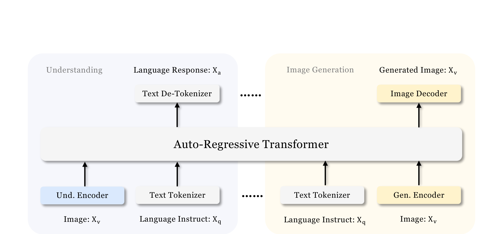
Figure 5: Janus 整体架构：解耦的理解编码器与生成编码器。网络架构¶
骨干：DeepSeek-LLM (1.3B)，最大序列长度 4096。
理解分支（Understanding）： - Understanding Encoder：SigLIP-Large-Patch16-384，从图像中提取高维语义特征。 - 特征从 2D 网格展平为 1D 序列后，经 Understanding Adaptor（两层 MLP）映射到 LLM 输入空间。
生成分支（Generation）： - Generation Encoder：来自 LlamaGen 的 VQ tokenizer，codebook 大小 16,384，下采样倍率 16，将图像编码为离散视觉 token ID。 - 离散 ID 展平后，经 Generation Adaptor（两层 MLP）映射到 LLM 输入空间。
输出头： - 文本预测复用 LLM 内置预测头。 - 图像预测使用随机初始化的预测头，最终通过 Image Decoder 生成图像。
所有图像缩放/裁剪至 384×384。
训练方法¶
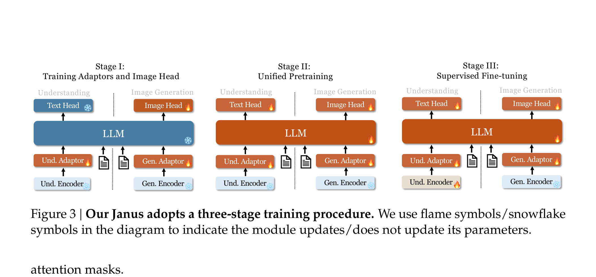
Figure 6: Janus 三阶段训练流程。| 阶段 | 目标 | 可训练参数 | 关键数据 |
|---|---|---|---|
| Stage I | 训练 Adaptors 与 Image Head | Understanding Adaptor、Generation Adaptor、Image Head；视觉编码器与 LLM 冻结 | 125 万 ShareGPT4V 图文对（理解）；约 120 万 ImageNet-1k（生成） |
| Stage II | 统一预训练 | 解冻 LLM，使用全部数据类型 | 纯文本、WikiHow/WIT 交错图文、多源 image caption、DeepSeek-VL 图表数据、text-to-image 生成数据 |
| Stage III | 监督微调 | 除 Generation Encoder 外全部可训练 | 纯文本对话、多模态理解指令微调数据、视觉生成数据 |
训练目标：仅使用交叉熵损失
- 纯文本/多模态理解任务：对文本序列计算损失。
- 视觉生成任务：仅对图像序列计算损失。
推理：图像生成使用 Classifier-Free Guidance（CFG），默认尺度 \(s=5\)。训练时以 10% 概率将 text-to-image 数据的文本条件替换为 pad token。
3.2 Janus-Pro¶
📄 论文：Janus-Pro: Unified Multimodal Understanding and Generation with Data and Model Scaling
作者：DeepSeek
发表：arXiv 2025
核心思想¶
Janus-Pro 在 Janus 架构不变的前提下，从训练策略、数据规模、模型规模三个维度升级。发布 1B 与 7B 两个版本，在理解与生成任务上均大幅提升。
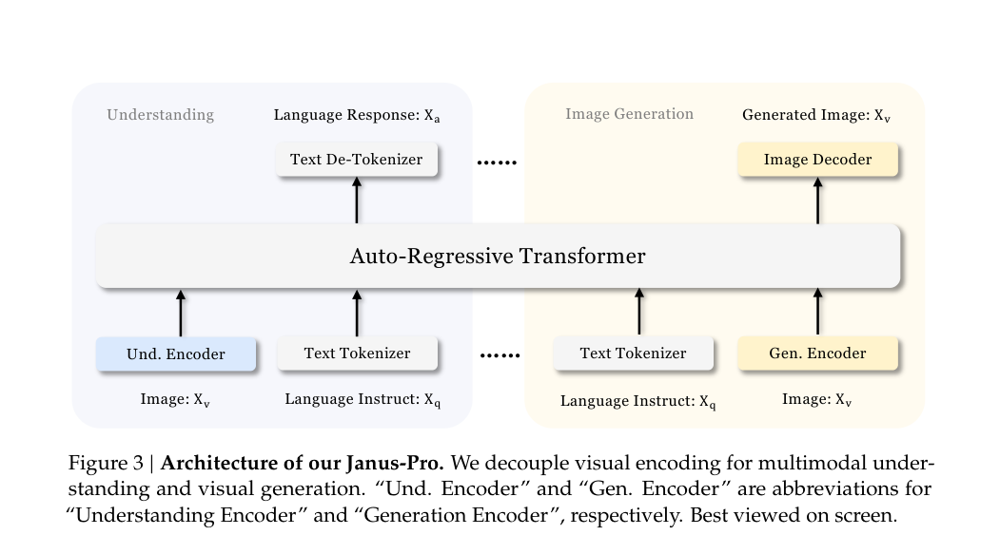
Figure 7: Janus-Pro 网络架构图（视觉编码解耦）。网络架构¶
与 Janus 保持一致：理解分支用 SigLIP，生成分支用 VQ tokenizer，中间共享同一个自回归 Transformer。架构本身没有改变。
训练方法¶
三阶段训练优化：
- Stage I：增加 Stage I 的训练步数，让模型在 ImageNet 上充分学习像素依赖。
- Stage II：Janus 原方案把文生图训练拆成 ImageNet 类别名数据 + 普通文生图数据两部分。Janus-Pro 去掉 ImageNet 数据，直接用正常文生图数据训练模型根据密集描述生成图像。
- Stage III：调整三类数据比例：多模态理解 : 纯文本 : 文生图 从 7:3:10 改为 5:1:4，略微降低文生图数据占比以提升理解能力。
数据扩展：
- 多模态理解：Stage II 预训练在 DeepSeek-VL2 基础上新增约 9000 万 样本，包括 YFCC、Docmatrix 等。
- 视觉生成：引入约 7200 万 合成美学数据，使统一预训练阶段真实数据与合成数据比例达到 1:1。
模型扩展：
- Janus 仅在 1.5B 规模验证；Janus-Pro 推出 1B 与 7B 版本。
- 更大规模 LLM 后，理解与生成任务的损失收敛速度均显著加快。
Janus vs Janus-Pro¶
| 维度 | Janus | Janus-Pro |
|---|---|---|
| 模型规模 | 1.5B | 1B / 7B |
| Stage II 训练 | ImageNet + 普通文生图数据 | 去掉 ImageNet，直接密集描述文生图 |
| Stage III 数据比 | 7:3:10 | 5:1:4 |
| 理解数据 | 有限 | 增加约 9000 万样本 |
| 生成数据 | 真实世界数据为主 | 引入 7200 万合成美学数据，真实:合成=1:1 |
| MMBench | 69.4 | 79.2（7B） |
| GenEval | 0.61 | 0.80（7B） |
四、BAGEL：MoT 双专家统一理解、生成与编辑¶
📄 论文：Emerging Properties in Unified Multimodal Pretraining
作者：ByteDance Seed
发表：arXiv 2025
核心思想¶
BAGEL 是字节跳动 Seed 团队开源的统一多模态基础模型，采用 decoder-only + Mixture-of-Transformer-Experts（MoT）架构，7B 激活参数（共 14B），原生支持图像/视频理解、文本到图像生成、图像编辑与自由形式视觉操作。论文重点展示了随着训练 token 增加，理解、生成、编辑、智能编辑等能力依次涌现。
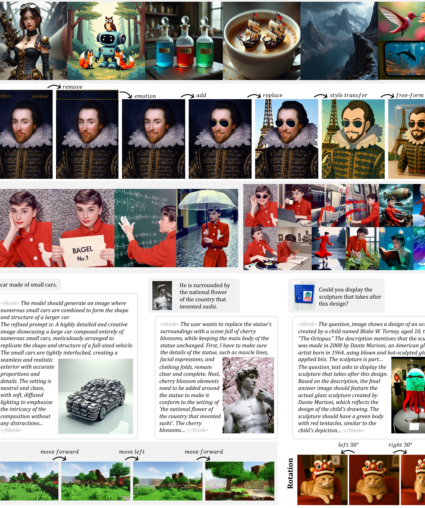
Figure 8: BAGEL 能力总览：生成、编辑、自由形式操作、推理、世界导航等。网络架构¶
Backbone：基于 Qwen2.5 LLM 的 decoder-only Transformer，使用 RMSNorm、SwiGLU、RoPE、GQA，并在每个注意力块加入 QK-Norm 以稳定生成训练。
MoT 双专家：
- Und. Expert（理解专家）：处理文本 token 与 ViT 视觉 token，输出语言响应。
- Gen. Expert（生成专家）：处理 VAE 视觉 token，输出速度预测（Rectified Flow）。
- 两个专家在 FFN/QKV 上独立，但共享同一层 Multi-modal Self Attention，使理解与生成在同一上下文中无损交互。
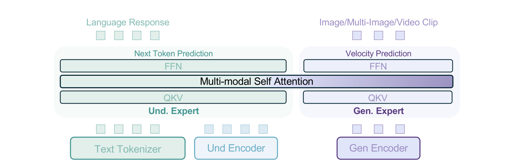
Figure 9: BAGEL 模型架构：MoT 双专家与共享多模态自注意力。双视觉编码器：
- 理解编码器：SigLIP2-so400m/14 ViT，预训练分辨率 384，最大输入 980×980，使用 NaViT 支持原生宽高比，通过 2 层 MLP 连接器对齐 LLM 隐层。
- 生成编码器：FLUX 预训练 VAE，下采样率 8，latent 通道 16，再经 2×2 patch embedding 映射到 LLM 隐层维度；训练时 VAE 冻结。
三种视觉 token 角色：
- Noised VAE token：带扩散噪声的 latent，用于 Rectified-Flow 训练。
- Clean VAE token：无噪声 latent，作为生成后续图像/文本的条件。
- ViT token：来自 SigLIP2，统一输入格式并增强交错生成质量。
训练方法¶
四阶段训练策略：
| 阶段 | 可训练组件 | 数据/说明 |
|---|---|---|
| Alignment | 只训练 MLP 连接器 | 378×378 图文对做 image captioning |
| Pre-training（PT） | 除 VAE 外全部可训练 | 约 2.5T token，生成分辨率 256–512，理解分辨率 224–980 |
| Continued Training（CT） | 全部可训练 | 约 2.6T token，生成分辨率 512–1024，提高交错数据比例 |
| SFT | 全部可训练 | 72.7B token，高质量图文对、交错生成数据、LLaVA-OV / Mammoth-VL 指令数据 |
损失函数：
- 文本 token：Cross-Entropy Loss（Next-Token-Prediction）
- 视觉生成 token：MSE Loss，基于 Rectified Flow 对加噪 VAE latent 做速度预测
数据构成（约 5T+ token）：
| 数据类型 | 样本数 / Token 数 |
|---|---|
| 纯文本 | 400M / 0.4T |
| 图文对-理解 | 500M / 0.5T |
| 图文对-生成 | 1600M / 2.6T |
| 交错理解 | 100M / 0.5T |
| 交错生成-视频 | 45M / 0.7T |
| 交错生成-网页 | 20M / 0.4T |
能力涌现：随着训练 token 增加，基础理解（≈0.18T）和生成（≈0.68T）最先收敛，传统编辑（≈2.64T）随后提升，需要复杂多步推理的"智能编辑"（≈3.61T）最后涌现。
五、Show-o / Show-o2：自回归与扩散的统一¶
5.1 Show-o¶
📄 论文：Show-o: One Single Transformer to Unify Multimodal Understanding and Generation
作者：Jinjin Xu, Lixin Xie, Peihao Chen 等
发表：ICLR 2025
核心思想¶
Show-o 首次在一个模型内同时实现文本的自回归建模与图像的离散扩散建模。它基于预训练 LLM（Phi-1.5），图像经 MAGVIT-v2 lookup-free quantizer 编码为 16×16 离散 token，与文本共享统一词表。关键创新是 Omni-Attention：文本 token 用因果注意力，图像 token 用全注意力，根据输入序列格式自适应混合。
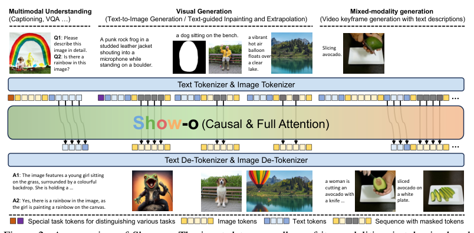
Figure 10: Show-o 整体架构概览。网络架构¶
Backbone：Phi-1.5（1.3B），仅在每层 attention 前加入 QK-Norm；embedding 层扩展 8192 个可学习图像 token embedding。
Tokenizer / De-Tokenizer：
- 文本：直接使用预训练 LLM 的 tokenizer。
- 图像：MAGVIT-v2 lookup-free quantizer，256×256 图像 → 16×16 离散 token，codebook \(K=8192\)。
统一 Prompt 格式：
[MMU]：多模态理解任务[T2I]：文生图任务[SOT]/[EOT]：文本起止[SOI]/[EOI]：图像起止
Omni-Attention：
- 理解任务：图像 token 可互相全注意，文本 token 对前面所有图像 token 做因果注意。
- 生成任务：图像 token 对前面所有文本 token 做全注意，图像内部互相全注意。
- 纯语言建模：退化为标准因果注意力。
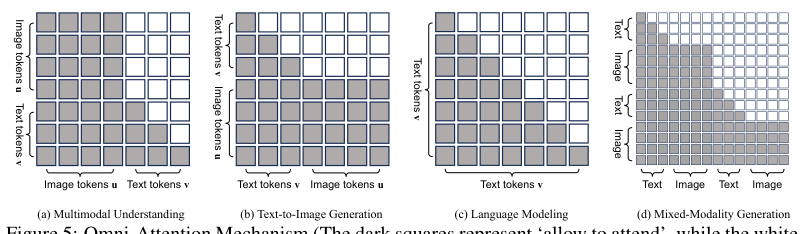
Figure 11: Omni-Attention 机制：文本 causal attention、图像 full attention。训练方法¶
两个学习目标：
- NTP（Next Token Prediction）：用于文本 token。
- MTP（Mask Token Prediction）：用于图像 token，按随机比例将图像 token 替换为
[MASK]，模型根据未掩码区域与文本 token 重建被掩码图像 token。
三阶段训练流程：
- Image Token Embedding 与 Pixel Dependency Learning：使用 RefinedWeb、ImageNet-1K、图像描述数据，学习图像 token embedding、像素依赖与图文对齐。
- Image-Text Alignment for Understanding & Generation：在约 35M / 2.0B 图文对上训练，重点优化图像描述与文生图任务的图文对齐。
- High-Quality Data Fine-tuning：使用约 1M 高质量图文对优化文生图，并用 LLaVA-v1.5 风格指令数据与 GenHowTo 数据分别优化多模态理解和混合模态生成。
5.2 Show-o2¶
📄 论文：Show-o2: Improved Native Unified Multimodal Models
发表：NeurIPS 2025
核心思想¶
Show-o2 将 Show-o 的"离散 token + 离散扩散"路线升级为"连续 3D VAE 隐空间 + flow matching"，并引入双路统一视觉表征。支持文本、图像、视频的理解与生成，以及它们的交错/混合模态生成。
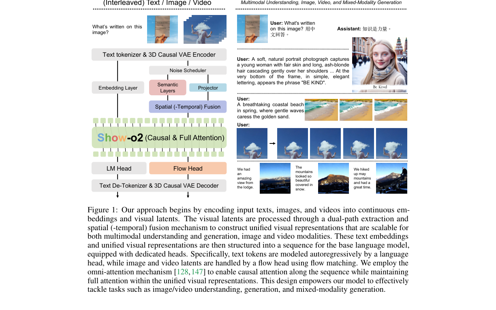
Figure 12: Show-o2 整体模型架构。网络架构¶
视觉侧：基于 Wan2.1 提出的 3D 因果 VAE，将图像和视频编码为连续视觉隐变量。
统一视觉表征（双路结构）：
- Semantic Layers \(S(\cdot)\)：基于 SigLIP 的 vision transformer block，蒸馏自 SigLIP-so400m-patch14-384，负责高层语义。
- Projector \(P(\cdot)\)：2D patch embedding，保留低层信息。
- 二者拼接后经 Spatial(-Temporal) Fusion (STF) + 两层 MLP + RMSNorm 得到统一表征 \(u\)。
Backbone：基于预训练 LLM（Qwen2.5-1.5B-Instruct / Qwen2.5-7B-Instruct），使用 omni-attention：序列级别 causal attention，统一视觉表征内部 full attention。
输出头：
- LM Head：自回归预测文本 token。
- Flow Head：基于 adaLN-Zero 做时间步调制，通过 flow matching 预测速度 \(v_t = dx_t/dt\)，用于图像/视频生成。
训练方法¶
整体损失：
- \(\mathcal{L}_{\text{NTP}}\)：文本 next-token prediction（语言头）
- \(\mathcal{L}_{\text{FM}}\)：flow matching 损失（flow head）
预蒸馏：训练前先对 Semantic Layers \(S(\cdot)\) 进行蒸馏（200K iterations，batch 512，cosine LR \(2 \times 10^{-5}\)），目标为：
两阶段训练：
| 阶段 | 可训练组件 | 数据 |
|---|---|---|
| Stage-1 | Projector、Spatial(-Temporal) Fusion、Flow Head | 约 66M image-text 对，逐步加入 video-text 对和交错数据 |
| Stage-2 | Full Model（w/o VAE） | 9M 高质量多模态理解指令数据、16M 高质量视觉生成数据、1.6M 视频理解数据 |
Show-o vs Show-o2¶
| 维度 | Show-o | Show-o2 |
|---|---|---|
| 视觉表示 | 离散图像 token（MAGVIT-v2） | 连续视觉隐变量，3D Causal VAE |
| 生成范式 | 离散扩散 / MTP | Flow Matching |
| 损失函数 | \(\mathcal{L}_{\text{MTP}} + \alpha \mathcal{L}_{\text{NTP}}\) | \(\alpha \mathcal{L}_{\text{NTP}} + \mathcal{L}_{\text{FM}}\) |
| 模态支持 | 文本 + 图像 | 文本 + 图像 + 视频 |
| 统一表征 | 离散文本/图像 token 共享词表 | 双路统一视觉表征（Semantic + Projector + STF） |
| 基础 LLM | Phi-1.5（1.3B） | Qwen2.5-1.5B / 7B |
六、Lumina-mGPT：基于 Chameleon 的灵活分辨率真实感生成¶
📄 论文：Lumina-mGPT: Illuminate Flexible Photorealistic Text-to-Image Generation with Multimodal Generative Pretraining
作者：Alpha-VLLM
发表：arXiv 2024
核心思想¶
Lumina-mGPT 是一种 decoder-only 多模态自回归模型，直接加载 Meta 开源的 Chameleon 7B/30B mGPT 预训练权重作为初始化，而不是从头训练。它通过 Unambiguous Image Representation（Uni-Rep） 和 Resolution-Aware Prompt 解决了传统 1D 图像 token 序列无法区分原始长宽比的问题，支持从 512² 到 1024² 的渐进式高分辨率生成。
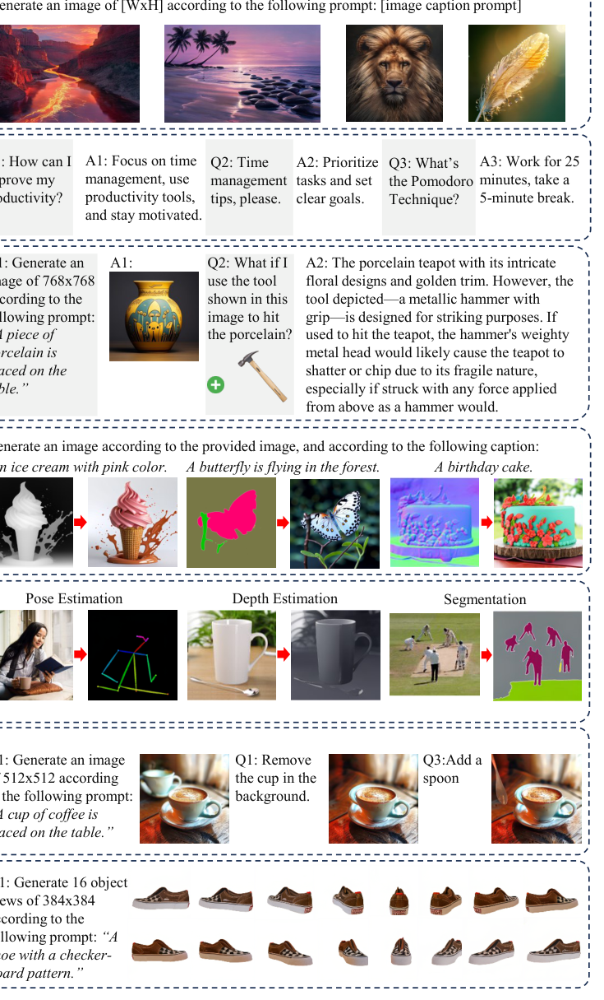
Figure 13: Lumina-mGPT 在统一的 next-token prediction 框架下支持的多种多模态任务总览。网络架构¶
Decoder-only Transformer：沿用并初始化自 Chameleon 7B/30B，所有模态统一为离散 token 序列，采用标准 next-token prediction。
Tokenizer：
- 文本：BPE tokenizer。
- 图像：VQ-VAE tokenizer，codebook 大小 8192。
Unambiguous Image Representation（Uni-Rep）：在图像 token 序列中加入：
<start-of-image>（SOI）- 高/宽指示 token（height/width indicator）
- 每行结束处的
<end-of-line>（EOL） <end-of-image>（EOI）
这样即使总 token 数相同，也能唯一还原原始图像分辨率与长宽比。
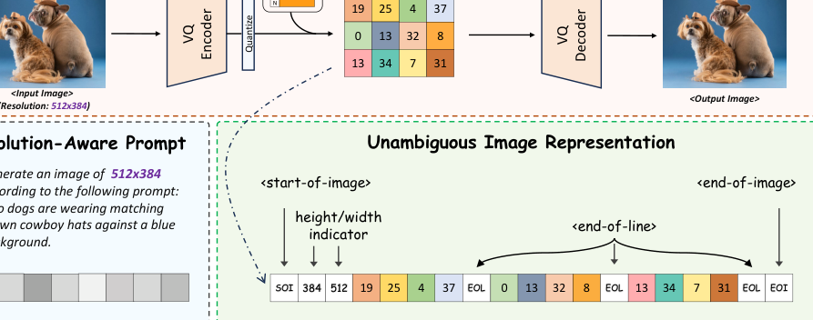
Figure 14: VQ-VAE 图像 tokenizer、Resolution-Aware Prompt 与 Uni-Rep。Resolution-Aware Prompt：
Generate an image of {width}x{height} according to the following prompt: {description}
让模型显式知道目标分辨率。
训练方法¶
初始化：直接加载 Chameleon 7B/30B mGPT 预训练权重。
FP-SFT（Flexible Progressive Supervised Finetuning）：
- 三阶段渐进式分辨率：每阶段目标面积分别约为 512²、768²、1024²。
- 每阶段准备一组面积相近但长宽比不同的候选分辨率，将每张图匹配到最合适的分辨率。
- 低分辨率阶段序列短、吞吐高，用于快速学习大量数据的构图与视觉概念；高分辨率阶段用于学习高频细节。
- 数据：精选高分辨率真实感图文对；同时混入 OpenHermess 纯文本数据与 Mini-Gemini 的 image-to-text 数据，防止灾难性遗忘。
Omni-SFT（Omnipotent Supervised Finetuning）：
在 FP-SFT 之后，把模型扩展为视觉通才，任务与数据包括：
- 语言引导图像编辑（MagicBrush、SEED）
- 稠密预测任务（NYUv2、ScanNet、KITTI、MSCOCO、RefCOCO 上的表面法向、深度、姿态、分割）
- 空间条件生成（ControlNet 条件：表面法向、深度、姿态、分割图）
- 多视图生成（10 万样本，16 个方位角，384² 渲染图像）
- 少量 FP-SFT 数据回放，保持原有文生图能力。
损失与优化：
- 所有任务统一使用 next-token prediction 交叉熵损失，仅对回复部分计算损失。
- AdamW，weight decay=0.1，\(\beta=(0.9, 0.95)\)，学习率 \(2 \times 10^{-5}\)。
- z-loss 权重 \(1 \times 10^{-5}\)；7B 模型额外使用 dropout=0.05。
- 借鉴扩散模型的 classifier-free guidance，训练时以 10% 概率随机 drop 条件/上下文。
Lumina-mGPT 与 Chameleon / Emu3 的对比¶
| 维度 | Chameleon | Lumina-mGPT | Emu3 |
|---|---|---|---|
| 初始化 | 从头训练 | 加载 Chameleon mGPT | 从头训练 |
| 图像分辨率 | 512×512 | 512² → 1024² 灵活分辨率 | 720×720 |
| 核心创新 | 早期融合统一 token | Uni-Rep + 渐进分辨率 | 纯 NTP + 视频生成 |
| 任务扩展 | 图文理解 + 交错生成 | + 图像编辑、稠密预测、条件生成、多视图 | + 视频生成 |
七、技术路线对比与总结¶
7.1 三类原生多模态路线¶
| 路线 | 代表模型 | 核心思想 | 优势 | 劣势 |
|---|---|---|---|---|
| 统一离散 token + 纯自回归 | Emu3、Emu3.5、Chameleon、Lumina-mGPT | 文本/图像/视频都变成离散 token，单一 Transformer 做 NTP | 架构极简、可扩展性强、统一理解与生成 | 视觉 tokenizer 质量决定上限、自回归生成速度慢 |
| 解耦视觉编码 + 统一 Transformer | Janus、Janus-Pro | 理解与生成用不同视觉编码器，共享 LLM | 解决理解与生成的表征冲突、各自编码器可选最优 | 不是最"统一"的表示，需要两个编码器 |
| 连续隐空间 + 双头输出 | Show-o、Show-o2、BAGEL | 视觉用连续 VAE latent，文本用 NTP，图像用 Flow/Diffusion | 生成质量高、可直接继承扩散模型优势 | 架构相对复杂、需要特殊的 attention/loss 设计 |
7.2 关键设计问题¶
| 问题 | 不同模型的选择 |
|---|---|
| 视觉是离散 token 还是连续特征？ | Chameleon/Emu3/Lumina-mGPT 选离散；Janus 理解用连续、生成用离散；Show-o2/BAGEL 用连续 VAE latent |
| 理解与生成是否共享同一视觉编码？ | Janus 明确解耦；BAGEL 用 MoT 双专家；Emu3 完全共享 |
| 图像生成是自回归还是扩散？ | Emu3/Chameleon/Lumina-mGPT 用自回归；Show-o 用离散扩散；Show-o2/BAGEL 用 Flow Matching |
| 如何加速自回归视觉生成？ | Emu3.5 的 DiDA 引入双向并行去噪；Lumina-mGPT 用高质量 SFT 数据减少步数 |
| 长视频/世界模型如何建模？ | Emu3.5 用 13T token 长视频交错数据；BAGEL 用视频交错数据和导航数据涌现世界建模能力 |
7.3 演进脉络¶
Chameleon (2024.05)
├── 统一离散 token + 早期融合
├── 从头训练，稳定性改进（QK-Norm / z-loss）
└── limitations：生成质量、分辨率灵活性不足
Lumina-mGPT (2024.08)
├── 基于 Chameleon 初始化
├── Uni-Rep + FP-SFT → 灵活高分辨率真实感生成
└── 扩展到图像编辑、稠密预测、条件生成
Emu3 (2024.09)
├── 纯 next-token prediction
├── 同时覆盖图像/视频/文本生成与感知
└── DPO 首次用于自回归视觉生成
Show-o (2024.08)
├── 单一 Transformer 内 NTP + 离散扩散
└── Omni-Attention 混合因果/全注意力
Janus (2024.10)
├── 解耦视觉编码：SigLIP 理解 + VQ 生成
└── 证明统一模型可超越专用模型
Emu3.5 (2025.10)
├── 34B + 13T token 长视频预训练
├── DiDA 推理加速 20×
└── 世界模型能力
Janus-Pro (2025.01)
├── 数据 scale + 模型 scale
└── 7B 版本理解与生成双提升
BAGEL (2025.05)
├── MoT 双专家
├── 5T+ token 涌现编辑/世界建模
└── 统一理解、生成、编辑
Show-o2 (2025.06)
├── 连续 3D VAE + Flow Matching
├── 图像/视频统一
└── 1.5B / 7B 两档规模
7.4 学习建议¶
- 先理解后装式架构：对照 LLaVA（连续视觉特征 → Projector → LLM），才能体会"原生"的含义。
- 从 Chameleon 入手：理解 early-fusion 和统一离散 token 的核心思想。
- 重点看 Emu3 / Emu3.5：最纯粹的 next-token prediction 原生多模态路线，注意 tokenizer 设计和 DiDA 加速。
- 理解 Janus 的解耦动机：这是原生多模态中"表征冲突"问题的经典解决方案。
- 看 Show-o / Show-o2 和 BAGEL：理解原生多模态不一定要求图像和文本用完全相同的生成目标，连续隐空间 + 双头也是一种重要路线。
- 关注 Lumina-mGPT：学习如何在已有预训练权重上做高效微调，以及 Uni-Rep 如何处理灵活分辨率。